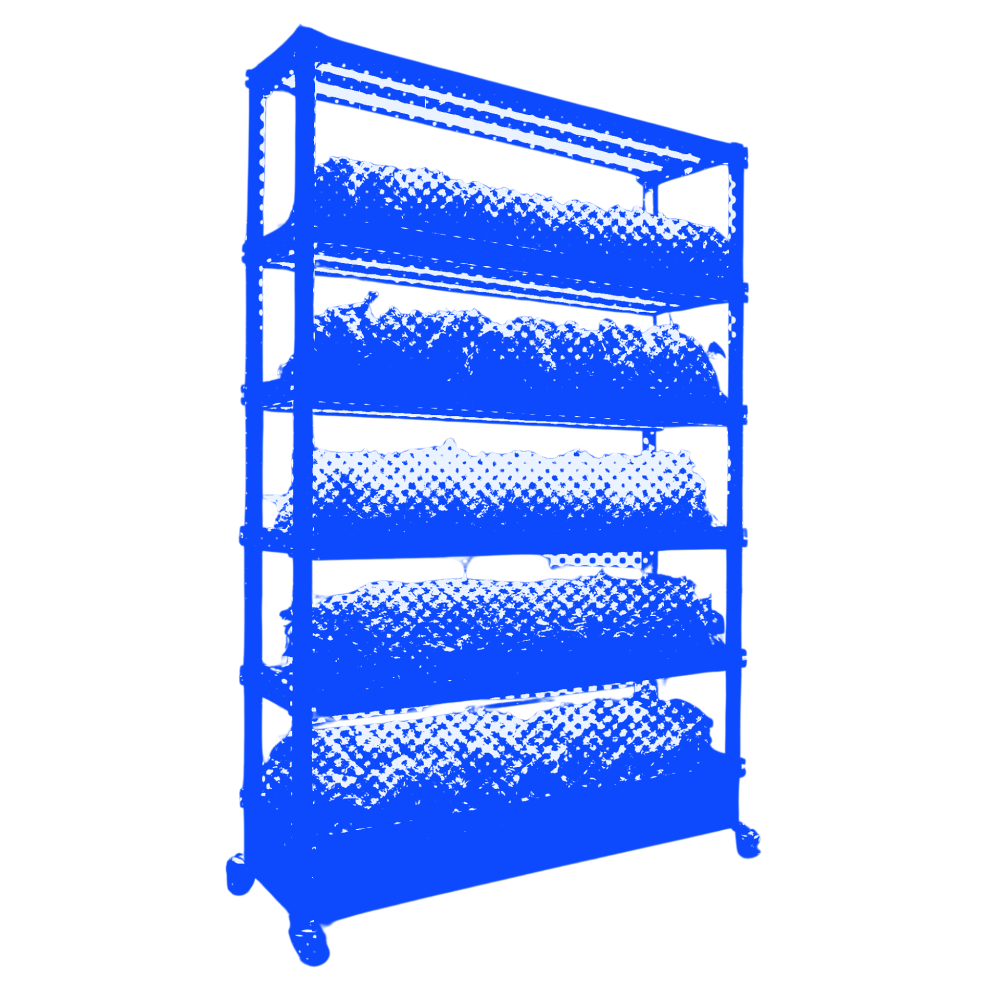

A perfeita junção da agricultura e do meio ambiente, trabalhando em conjunto para a geração de renda e preservação do planeta.

Surgem como uma alternativa as economias centralizadas nas grandes empresas, elas geram rendas e emponderam pessoas e a economia.
 Com a taxa populacional crescendo continuamente, a demanda alimentar cresce junto e é ai que entra a agricultura urbana e vertical.


Artigos do Site
Agrofloresta
Cooperativismo
Agricultura Urbana e Vertical
Links Uteis
Projeto Agrinho
Sistema FAEP
GitHub
Kultivar
Programação
Arquivos de Mídia